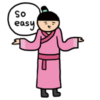
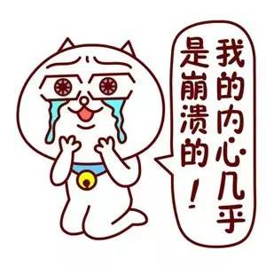
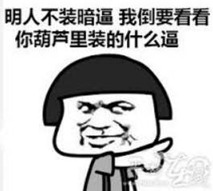
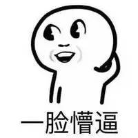

GET 和 POST 是 HTTP 请求的两种基本方法，要说它们的区别，接触过 Web 开发的人都能说出一二。
最直观的区别就是 GET 把参数包含在 URL 中，POST 通过 request body 传递参数。
一个经典的面试题
你可能自己写过无数个 GET 和 POST 请求，或者已经看过很多权威网站总结出的它们的区别，你非常清楚知道什么时候该用什么。
当你在面试中被问到这个问题，你的内心充满了自信和喜悦。

你轻轻松松地给出了一个“标准答案”（参考自 w3schools）：
- GET 在浏览器回退时是无害的，而 POST 会再次提交请求
- GET 产生的 URL 地址可以被收藏为书签，而 POST 不可以
- GET 请求会被浏览器主动 cache，而 POST 不会，除非手动设置
- GET 请求只能进行 URL 编码，而 POST 支持多种编码方式
- GET 请求参数会被完整保留在浏览器历史记录里，而 POST 中的参数不会被保留
- GET 请求在 URL 中传送的参数是有长度限制的，而 POST 没有限制
- 对参数的数据类型，GET 只接受 ASCII 字符，而 POST 没有限制
- GET 比 POST 更不安全，因为参数直接暴露在 URL 上，所以不能用来传递敏感信息
- GET 参数通过 URL 传递，POST 放在
request body中
“很遗憾，这不是我们要的回答！”

请告诉我真相。。。
如果我告诉你 GET 和 POST 本质上没有区别，你信吗？
让我们扒下 GET 和 POST 的外衣，坦诚相见吧！

GET 和 POST 的本质
GET 和 POST 是什么？HTTP 协议中的两种发送请求的方法。
HTTP 是什么？HTTP 是基于 TCP/IP 的关于数据如何在万维网中通信的协议。
HTTP 的底层是 TCP/IP。所以 GET 和 POST 的底层也是 TCP/IP，也就是说，GET/POST 都是 TCP 连接。GET 和 POST 能做的事情是一样一样的。你要给 GET 加上 request body，给 POST 带上 URL 参数，技术上是完全行得通的。
那么，“标准答案”里的那些区别是怎么回事？

HTTP 定下的交通规则
在我大万维网世界中，TCP 就像汽车，我们用 TCP 来运输数据，它很可靠，从来不会发生丢件少件的现象。但是如果路上跑的全是看起来一模一样的汽车，那这个世界看起来是一团混乱，送急件的汽车可能被前面满载货物的汽车拦堵在路上，整个交通系统一定会瘫痪。为了避免这种情况发生，交通规则 HTTP 诞生了（关于 TCP 本身，可以参看本站的《TCP 的那些事儿》）。HTTP 给汽车运输设定了好几个服务类别，有 GET、POST、PUT、DELETE 等等。HTTP 规定，当执行 GET 请求的时候，要给汽车贴上 GET 的标签（设置 method 为 GET），而且要求把传送的数据放在车顶上（URL 中）以方便记录；如果是 POST 请求，就要在车上贴上 POST 的标签，并把货物放在车厢里。当然，你也可以在 GET 的时候往车厢内偷偷藏点货物，但是这是很不光彩的；也可以在 POST 的时候在车顶上也放一些数据，让人觉得傻乎乎的。HTTP 只是个行为准则，而 TCP 才是 GET 和 POST 怎么实现的基本。
我们只看到 HTTP 对 GET 和 POST 参数的传送渠道（URL 还是 request body）提出了要求。“标准答案”里关于参数大小的限制又是从哪来的呢？
URL 长度限制从哪来
在我大万维网世界中，还有另一个重要的角色：运输公司。不同的浏览器（发起 HTTP 请求）和服务器（接受 HTTP 请求）就是不同的运输公司。虽然理论上，你可以在车顶上无限地堆货物（URL 中无限加参数）。但是运输公司可不傻，装货和卸货也是有很大成本的，他们会限制单次运输量来控制风险，数据量太大对浏览器和服务器都是很大负担。业界不成文的规定是：（大多数）浏览器通常都会限制 URL 长度在 2K 个字节，而（大多数）服务器最多处理 64K 大小的 URL，超过的部分，恕不处理。如果你用 GET 方式请求，在 request body 里偷偷藏了数据，不同服务器的处理方式也是不同的，有些服务器会帮你卸货，读出数据，有些服务器直接忽略。所以，虽然 GET 可以带 request body，也不能保证一定能被接收到哦。
好了，现在你知道，GET 和 POST 本质上就是 TCP 连接，并无差别。但是由于 HTTP 的规定和浏览器/服务器的限制，导致它们在应用过程中体现出一些不同。
一个 TCP 数据包与两个 TCP 数据包
你以为本文就这么结束了？
我们的大 BOSS 还等着出场呢。。。
这位 BOSS 有多神秘？当你试图在网上搜“GET和POST的区别”的时候，那些你会看到的搜索结果里，从没有提到他。他究竟是什么呢。。。
GET 和 POST 还有一个重大区别，简单地说：
- GET 产生一个 TCP 数据包；POST 产生两个 TCP 数据包
详细地说：
- 对于 GET 方式的请求，浏览器会把 HTTP header 和 data 一并发送出去，服务器响应 200（返回数据）
- 而对于 POST，浏览器先发送 header，服务器响应
100 Continue，浏览器再发送 data，服务器响应 200 OK（返回数据）
严格说来，100 Continue 不是服务器想回就回的：只有浏览器在请求头里带上了 Expect: 100-continue，并且服务器愿意接受这份数据时，才会先回一个 100 Continue。100 属于 1XX 信息类状态码，各类状态码的含义可以参看本站的《HTTP 状态码速查与解读》。
也就是说，GET 只需要汽车跑一趟就把货送到了，而 POST 得跑两趟——第一趟，先去和服务器打个招呼“嗨，我等下要送一批货来，你们打开门迎接我”，然后再回头把货送过去。
因为 POST 需要两步，时间上消耗的要多一点，看起来 GET 比 POST 更有效。因此 Yahoo 团队有推荐用 GET 替换 POST 来优化网站性能。但这是一个坑！跳入需谨慎。为什么？
- GET 与 POST 都有自己的语义，不能随便混用。
- 据研究，在网络环境好的情况下，发一次包的时间和发两次包的时间差别基本可以无视。而在网络环境差的情况下，两次包的 TCP 在验证数据包完整性上，有非常大的优点。
- 并不是所有浏览器都会在 POST 中发送两次包，Firefox 就只发送一次。
现在，当面试官再问你“GET 与 POST 的区别”的时候，你的内心是不是这样的？
结束！！！